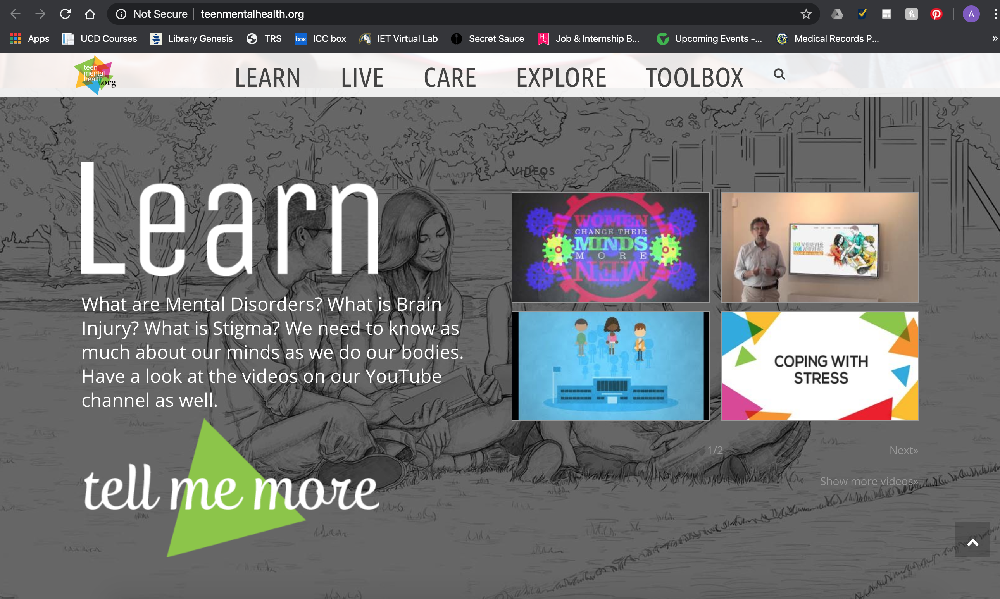
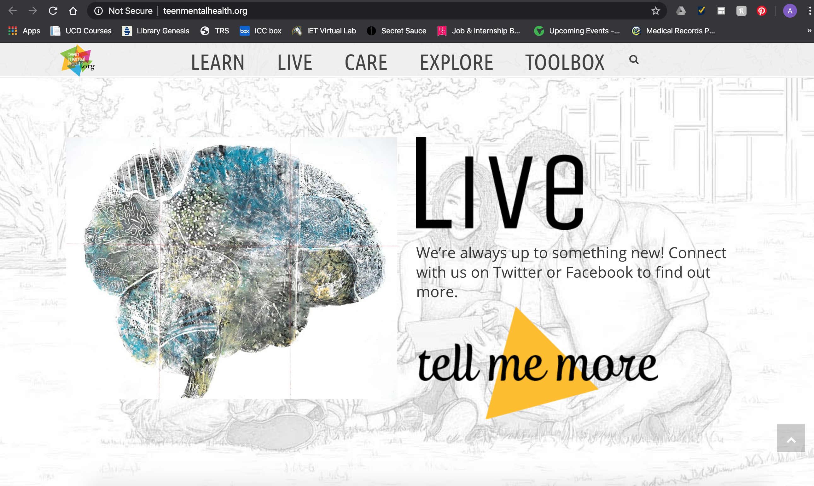
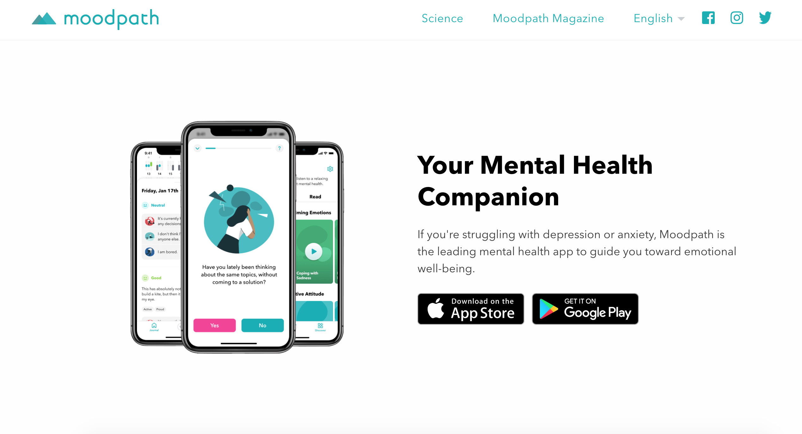
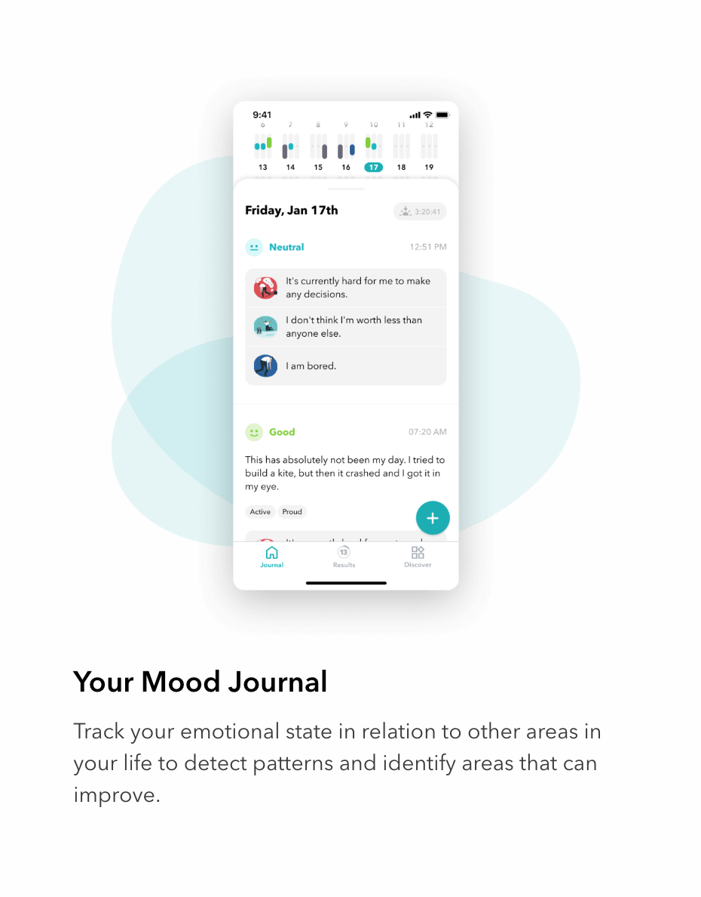
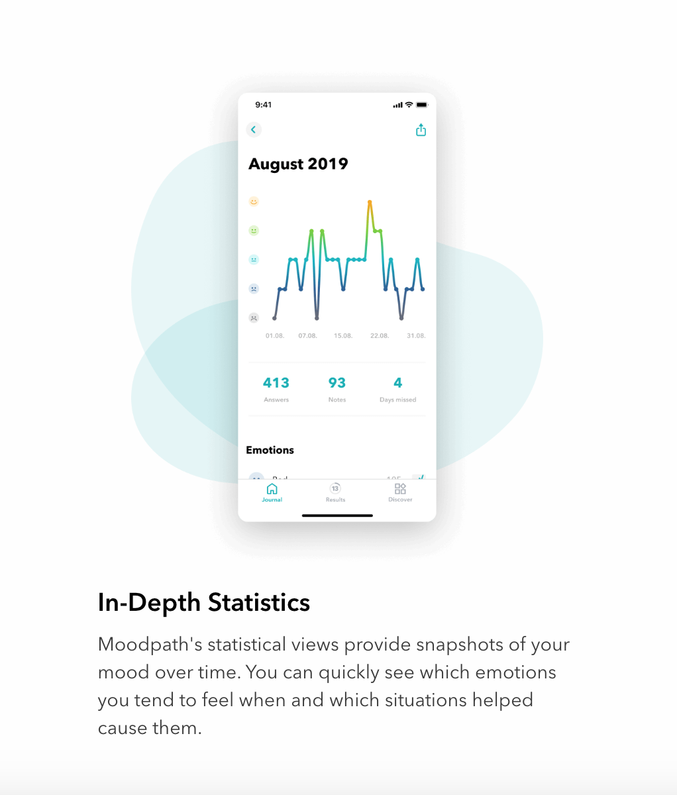

Teen Mental Health

Many mental health websites look a bit old fashioned. With this project,
I want to create something visually appealing, educational, and easy to
use. When I looked at the top ten google search results for "interactive
mental health website," teenmentalhealth.org was the only one that scratched
the surface of my criteria. The logo was colorful, the aesthetic of the page
was engaging and eye-catching, and the information was relatable.

The menu bar shows the audience their four points of focus; learn, live,
care, and explore. Each of these sections of the website takes you to
a more in-depth page. For example, the "Learn" section goes over topics like
brain injury, suicide, understanding stress, and more. Having an informational
side to this project is very important to me because mental health
is commonly misunderstood. Many people shrug off things like concussions and
stress, but these are serious issues. Only by starting off on the right
foot and educating younger generations now can we expect to raise awareness
properly.

Another positive side is that this website is very organized, and easy
to navigate. I especially like the "Our Stories" section because it provides
firsthand accounts of mental health issues narrated by students. On this page,
there is also a window to their latest twitter posts, which help show
recent developments of the organization. This information is displayed well
on the website and helps cue the viewer into other topics they may be
interested in.
I believe that this particular website could use more content, and also
should provide a way for the audience to engage more with the information
or others on the platform. It is possible that if this website was turned
into an app, it could have more of these exciting features.
Moodpath

Looking at various mental health websites made me feel like something was
lacking. They did not provide personalized content or a way for the audience
to be active with their mental health. As a result, I decided to look into
popular mental health applications on my phone, since they tend to be
more interactive.

Moodpath was the highest rated application on the app store, so I decided
to take a look at their features. This application not only has educational
information, resources, and statistics, but it also is a "companion." You can
use it to keep track of your day and moods, and it helps you reflect and keep
track of your mental health. The app checks in with its audience through
personalized questions, and it helps you better understand your emotional
state. Having a tool like this could be extremely useful for someone who
might feel like they aren't doing well, but cannot quite pinpoint it.
Having a record of these emotions would be useful for when an individual
might go see a doctor or go to therapy. They could pull up this journal
of information and start analyzing these patterns in order to get the help
they need.

Another positive aspect of this app is its visual appeal. It's calming colors
and minimalistic but fun graphics make it enjoyable to use. The interface
is well structured and designed, so it is definitely a good source of
inspiration for my own project. I also like that it helps you journal about
your day. Many people have trouble getting into the habit of journaling,
but it is a very useful activity. Being able to relax, think about your day,
and reflect on what you have learned is an important step in life.
If I could create a similar platform to Moodpath but catered towards
young adults, I think it would advantageous toward teaching younger generations
to take their mental health seriously. Making it a priority from the beginning
would help them navigate through obstacles later in life, and alleviate
the possibility of feeling overwhelmed by any mental health issues.